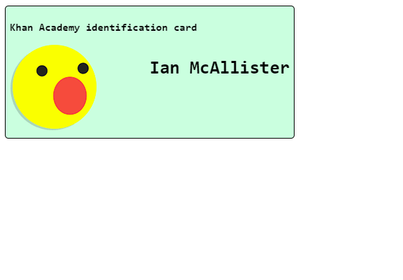

The lsat khan academy section I did was Dom/making webpages interactive it was another HTML course to maek webpages interactive by using JS like Jquery. I learned about changing things with css and html tags, more eventlistener. This felt like more of the same thing form Jquery, it felt like it was teaching me the same thing in a diffrent way. the new things I did learn are things like using the script tag to use innerHTMl to Change the whole page or just a portion findingg nodes and changing the site based off of that, and creating elements. There are no projects for this section so here are some screen shots of the challenges
